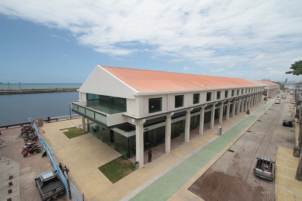
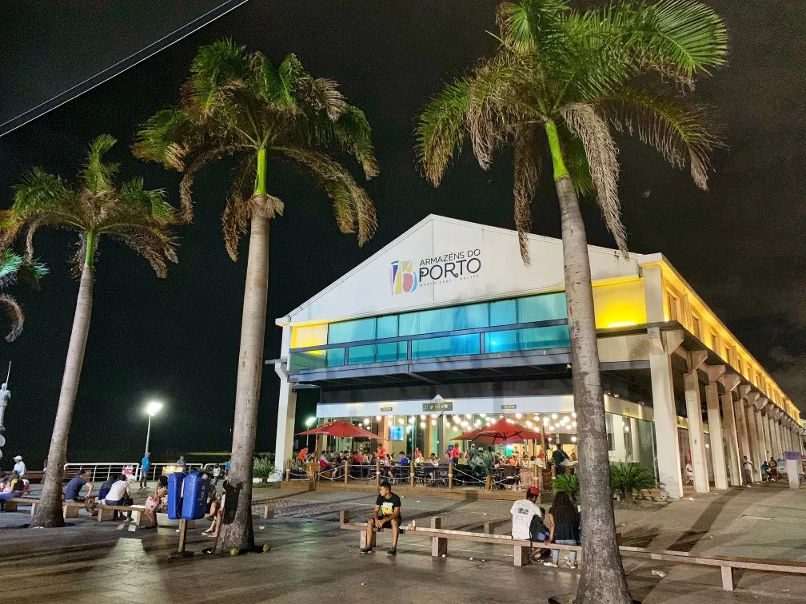
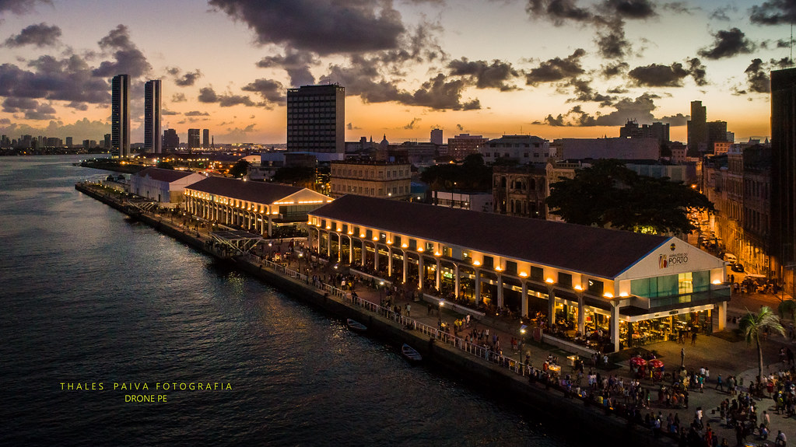
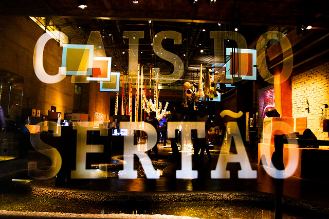
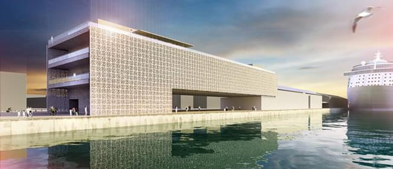
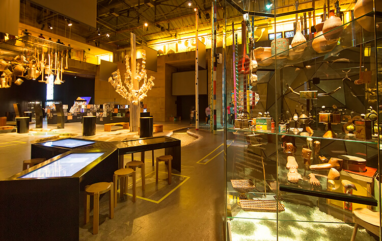

Recife Antigo
Armazens do Porto
O espaço fica bem ao lado do letreiro de Recife, na Praça do Marco Zero, e oferece uma variedade de bares, restaurantes, cafés e sorveterias.
  
Cais do Sertão
O museu abriga uma exposição permanente sobre o sertão brasileiro, conduzindo sua narrativa através da vida e obra do cantor pernambucano Luiz Gonzaga.
  